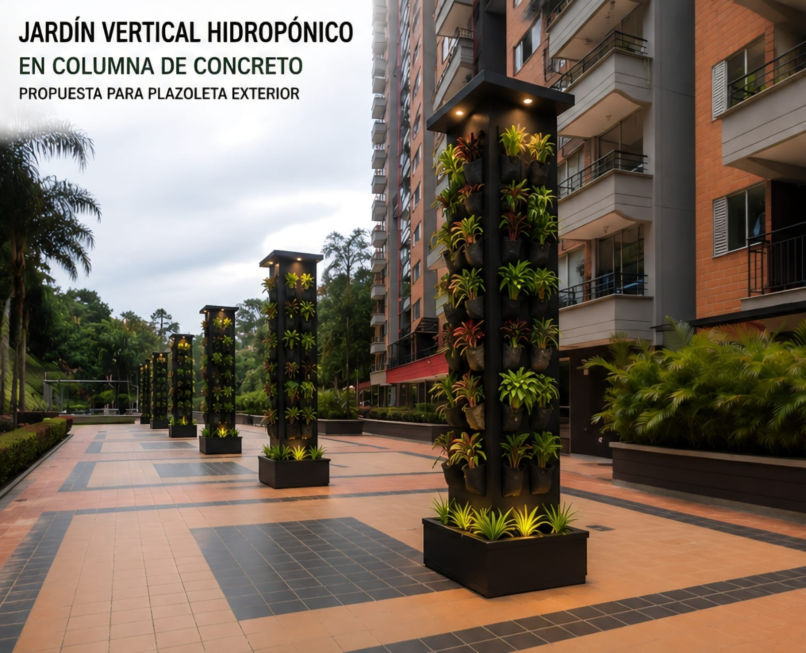

Visión
Para el año 2031, ADMCT HydroSmart Community se posicionará como un proyecto referente en soluciones de agricultura urbana comunitaria en el Valle de Aburrá, mediante la instalación de torres hidropónicas verticales con energía solar en unidades residenciales y la promoción de prácticas sostenibles de autocultivo y aprovechamiento de espacios subutilizados.
